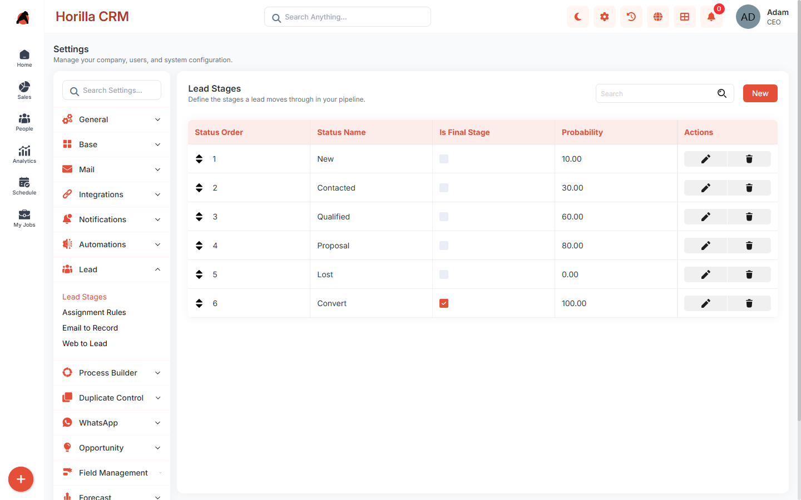
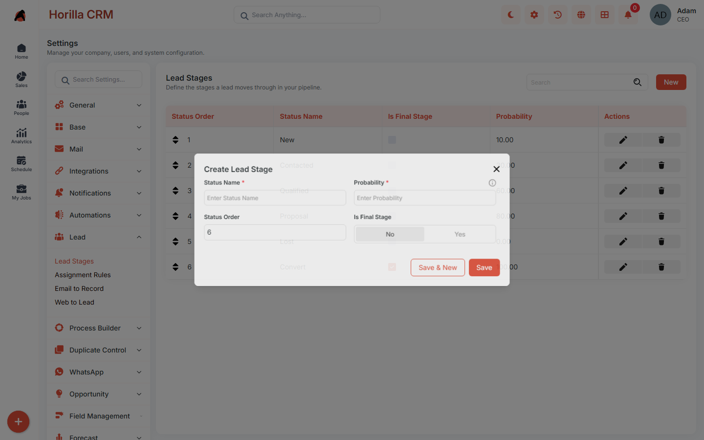

Introduction
Path: Settings → Lead → Lead Stages. The page title is Lead Stages, with the description “Define the stages a lead moves through in your pipeline.” Stages can be reordered by dragging the handle in Status Order. A company has one final stage, and that stage stays last.
1. Lead stage list
| Column | Contents |
|---|---|
| Status Order | Position in the pipeline. Drag the handle to reorder. |
| Status Name | Name of the stage, such as New, Contacted, Qualified, Proposal, Lost or Convert. |
| Is Final Stage | Checked for the one final stage. Convert is the final stage in the list shown here. |
| Probability | Default probability for the stage, from 0.00 to 100.00. |
| Actions | Edit or delete the stage. |

2. Creating a lead stage
Click New. The form title is Create Lead Stage.
| Field | Description |
|---|---|
| Status Name | Required. Name of the stage. |
| Probability | Required. Default probability percentage for this stage. |
| Status Order | Position in the pipeline. The form suggests the next order. |
| Is Final Stage | No or Yes. Only one stage can be final. Marking a stage as final clears the previous final stage and moves the new one to the end. |
Save stores the stage and closes the form. Save & New stores it and opens a blank form.
